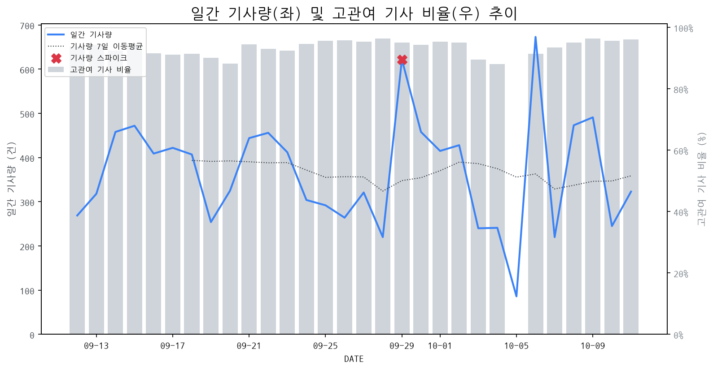

1
시장 활동 지표
기사량 추세 & 이상 징후 탐지
시장의 '전체 기사량'이 평소보다 비정상적으로 급증했는지(Spike)를 차트로 확인하고, LLM이 분석한 급등의 핵심 원인을 파악할 수 있음

고관여 기사란? 산업 연관 키워드로 수집된 기사들 중 디스플레이 키워드에 가중치를 반영하여 도출된 관련성 높은 기사
수집된 기사 수 (2026-10-11)
323
+34% WoW
기사량 변동 수준 (7일 이동평균 대비)
±6.7% 이하
2
오늘의 키워드
급격한 관심 ↑, 주목해야 할 키워드
1
oled
+8.6σ
LG디스플레이의 FMM 없는 OLED 생산 기술 혁신 발표가 핵심 동인으로 작용했습니다.
Related Metrics
금일 언급량: 55, 전일 대비: +53
Interpretation
기술 우위 확보 및 시장 경쟁력 강화
Next Step
핵심 토픽 'OLED_Topic' 관련 신호입니다. 3번 섹션(키워드 감성분석)에서 해당 토픽의 감성 변동을 교차 확인하세요.
2
lg디스플레이
+5.5σ
LG디스플레이, 'FMM 없는 OLED'와 'FLiPP' 기술 혁신으로 생산성 및 성능 향상 기대감 급증.
Related Metrics
금일 언급량: 27, 전일 대비: +27
Interpretation
차세대 OLED 경쟁력 확보
Next Step
'lg디스플레이' 관련 상세 기사 및 경쟁사 반응 모니터링
3
fmm
+2.7σ
LG디스플레이의 FMM 없는 OLED 신기술 'FLiPP' 발표로 IT OLED 시장 확대 기대감이 급증했습니다.
Related Metrics
금일 언급량: 6, 전일 대비: +6
Interpretation
신기술, 시장 선점 경쟁 심화
Next Step
'fmm' 관련 상세 기사 및 경쟁사 반응 모니터링
4
올레드
+1.6σ
LG디스플레이가 FMM 공정 없이 생산 효율 및 비용 절감을 획기적으로 개선한 RGB 올레드 신기술 'FLiP'를 공개하며 주목받았습니다.
Related Metrics
금일 언급량: 3, 전일 대비: +3
Interpretation
생산 혁신, 경쟁 우위 확보
Next Step
'올레드' 관련 상세 기사 및 경쟁사 반응 모니터링
3
실시간 Risk 키워드
경계해야 할 시그널 탐지
특정 토픽의 부정 감성 점수가 급등할 때 이를 즉시 탐지하고, "근거 기사" 링크를 통해 리스크의 실체를 빠르게 파악할 수 있음
키워드 분석 결과, 오늘은 걱정할 만한 하락 신호가 없습니다. (부정 언급량 변화: +1.5σ 이내)
4
주요 이벤트 모니터링
실시간 산업 동향 파악을 위한 주요 활동
최근 발생한 주요 기업들의 신제품 출시, 투자 등 주요 이벤트를 제공하여 매일 경쟁사 동향을 확인할 수 있음
디스플레이 시장의 주요 경쟁 축이 기존의 화질 우위에서 폼팩터 혁신과 AI 기능 통합으로 이동하고 있습니다. 이는 기술 개발 및 제품 전략의 변화를 요구합니다.
Impact
향후 디스플레이 시장은 새로운 폼팩터와 AI 기반 기능이 탑재된 제품들이 시장을 주도하며, 기술 표준 및 경쟁 구도에 큰 변화를 가져올 것으로 예상됩니다.
Next Step
차별화된 폼팩터 개발 및 AI 기술 내재화 전략을 통해 새로운 시장 트렌드를 선도해야 합니다.
애플 CEO 팀 쿡이 의장으로서 첫 행선지로 중국을 방문했으며, 이는 AI 및 공급망 관련 논의를 위한 것으로 해석된다. 이 방문은 글로벌 공급망의 중요성과 AI 기술 발전이 디스플레이 시장에 미칠 영향을 시사한다.
Impact
애플의 중국 내 AI 및 공급망 관련 논의 강화는 향후 디스플레이 패널의 생산, 기술 개발 방향, 그리고 중국 디스플레이 제조사들과의 협력 관계에 영향을 미칠 수 있다.
Next Step
중국 내 AI 기술 발전 동향과 애플의 공급망 전략 변화를 면밀히 모니터링하며, 선제적인 기술 개발 및 파트너십 전략을 수립해야 한다.
폴더블폰 시장은 더 이상 '접는 재미'라는 초기 흥행 요소에 의존하지 않고, 제품의 두께와 화면 품질이라는 본질적인 경쟁력으로 이동하고 있습니다. 이는 소비자들의 기대치가 높아지고 기술 성숙도가 증가했음을 시사합니다.
Impact
폴더블 디스플레이 시장은 획기적인 디자인 혁신보다는 슬림화, 내구성 강화, 그리고 화면 선명도 및 색 재현율 향상과 같은 기술적 완성도에 대한 경쟁이 심화될 것입니다.
Next Step
경쟁사들의 기술 로드맵을 면밀히 분석하여 두께 절감 및 고품질 디스플레이 구현 기술 개발에 집중하고, 이를 통해 차별화된 사용자 경험을 제공하는 데 주력해야 합니다.
LG디스플레이(LGD)가 기존 FMM(Fine Metal Mask) 공정을 배제한 'FLiPP' 기술을 선보이며 IT OLED 시장에 직접 진출한다. 이는 IT 기기에 최적화된 OLED 생산 방식의 혁신을 의미한다.
Impact
FLiPP 기술은 IT OLED 생산의 효율성을 높이고 비용을 절감하여, 향후 노트북, 태블릿 등 IT 기기에서의 OLED 채택을 가속화할 잠재력이 있다.
Next Step
기존 FMM 기반의 OLED 패널 제조사들은 FLiPP 기술의 경쟁력과 파급 효과를 면밀히 분석하고, 자체 기술 개발 또는 전략적 제휴를 통해 차세대 IT OLED 시장 대응 방안을 모색해야 한다.
중국 화웨이가 미국 기업으로부터 특허 로열티를 받기 위한 움직임을 보이고 있습니다. 이는 화웨이가 보유한 특허 기술에 대한 로열티를 주장하며 관련 시장에 변화를 예고합니다.
Impact
화웨이가 특허 로열티를 통해 시장 영향력을 확대하고, 관련 기술 표준 설정에 더욱 적극적으로 참여할 가능성이 높아져 디스플레이 기술 경쟁 환경에 변화를 가져올 수 있습니다.
Next Step
디스플레이 제조 기업은 화웨이의 특허 포트폴리오를 면밀히 분석하고, 잠재적인 로열티 지급 필요성 및 라이선싱 전략을 검토해야 합니다.